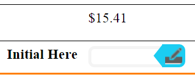
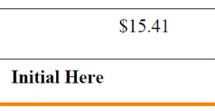

Depending on how your Empower document was designed, it might contain electronic signature (e-signature) fields. The e-signature fields in your Empower document are simply placeholders that do not appear in previews or in the PDF that you create from your Empower document. (Behind the scenes, e-signature fields contain dimensions, coordinates, and metadata that your e-signature vendor will use to provide guidance for customers who receive a PDF created from your Empower document.)
To show or hide e-signature fields in your Empower document:
Click the button.
The e-signature fields in the Empower document toggle on or off.
Although you can show or hide e-signature fields in an Empower document, you cannot alter or delete the e-signature fields themselves. You can, however, change the final position of e-signature fields by adding or removing content in an Empower document. For example, if your Empower document contains an e-signature field that follows an editable paragraph, if you add several lines of content to the editable paragraph, then the e-signature field changes position accordingly.
Note: The workflow for your Empower document—including any automated processing done by your e-signature vendor—is determined by the person who designed the document.
The following table shows how e-signature fields appear in an Empower document, in a PDF created from the Empower document, and in a PDF returned from an e-signature vendor:
| Empower document | PDF created from an Empower document | PDF returned from e-signature vendor |
|---|---|---|
|
 |
 |